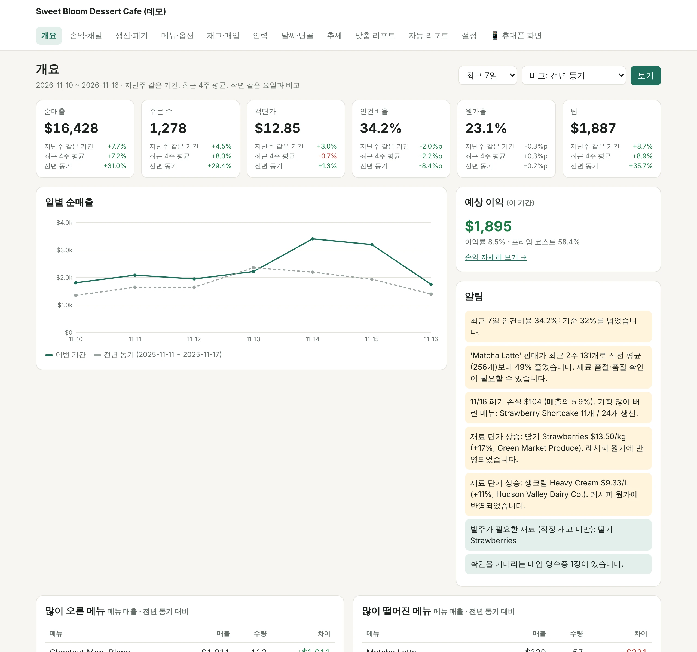
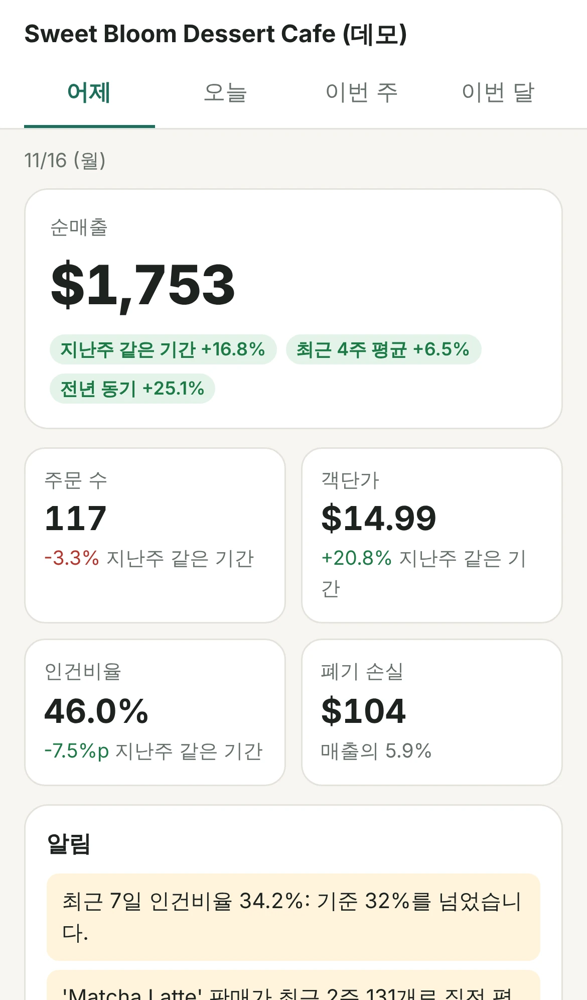
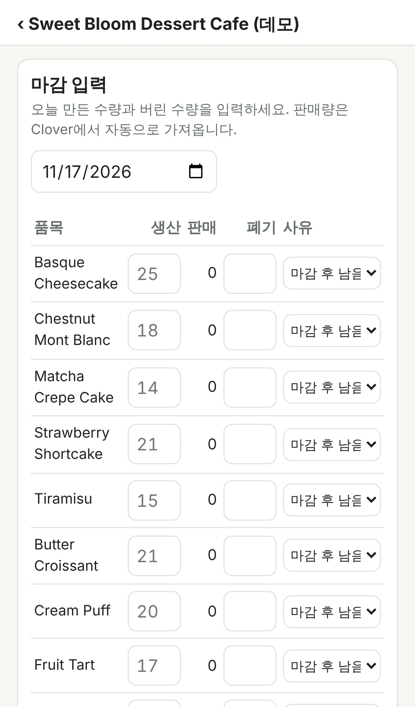
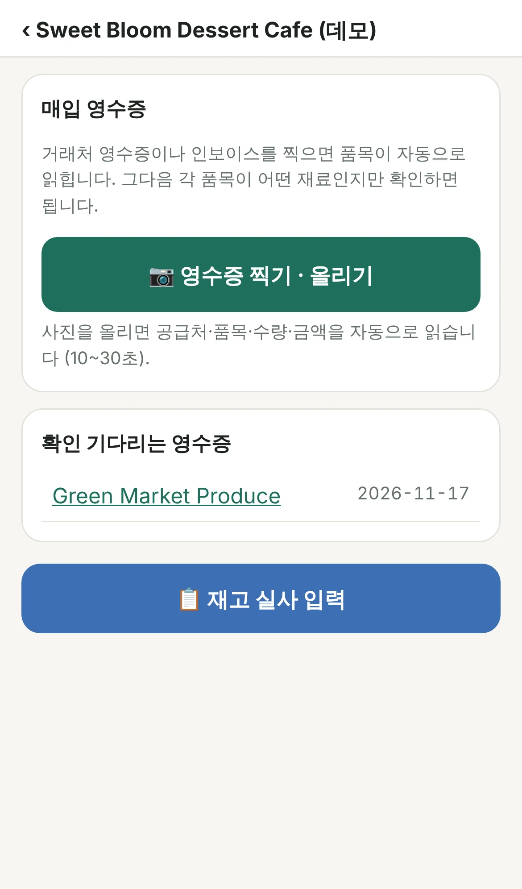

폐기·로스율
Clover몇 개 팔렸는지리포트몇 개 만들어 몇 개 버렸는지, 이유별로
폐기 손실 $105 · 매출의 6.0%
Clover POS를 쓰는 디저트·카페 사장님께
버린 케이크, 메뉴별로 실제 남는 돈, 직원별 토핑 판매, 배달 수수료를 뺀 순이익까지. Clover 기본 리포트에 없는 숫자를 휴대폰 한 화면에 모아 드립니다.
Clover에는 읽기 전용 키로만 연결합니다. 가격·메뉴·결제는 바꿀 수 없습니다.
여섯 가지 리포트
디저트 가게에서 돈이 새는 곳을 기준으로 만들었습니다.
폐기 손실 $105 · 매출의 6.0%
잘 팔리지만 덜 남는 일꾼 메뉴 찾기
직원별 부착률 차이를 한눈에
배달 가격을 몇 % 올려야 매장과 같은지
인건비율 34.2% · 기준 32% 초과 알림
비 예보 날 생산량 자동 조정
실제 화면
앱스토어 설치 없이 홈 화면에 추가해 앱처럼 씁니다. 직원 계정에서는 매출과 이익이 보이지 않습니다.




화면 속 매장과 숫자는 데모 데이터입니다. 앱 화면은 현재 한국어로 제공됩니다.
시작하기
사장님이 Clover 대시보드에서 직접 만들어 앱 화면에 붙여 넣습니다.
주문·결제·메뉴·직원 기록을 받아 오고, 그 뒤로는 매시간 새로 받습니다.
잘 팔리는 메뉴 10개만 넣어도 이익 화면 대부분이 채워집니다.
휴대폰과 메일로 어제 숫자와 오늘 할 일을 받아 봅니다.
노트북 한 대로 30분 안에 시연합니다. 데이터는 시연이 끝나면 지웁니다.
아래 신청서를 보내 주시면 직접 연락드려 시간을 잡겠습니다.
헤어샵·네일샵용 리포트도 준비 중입니다.